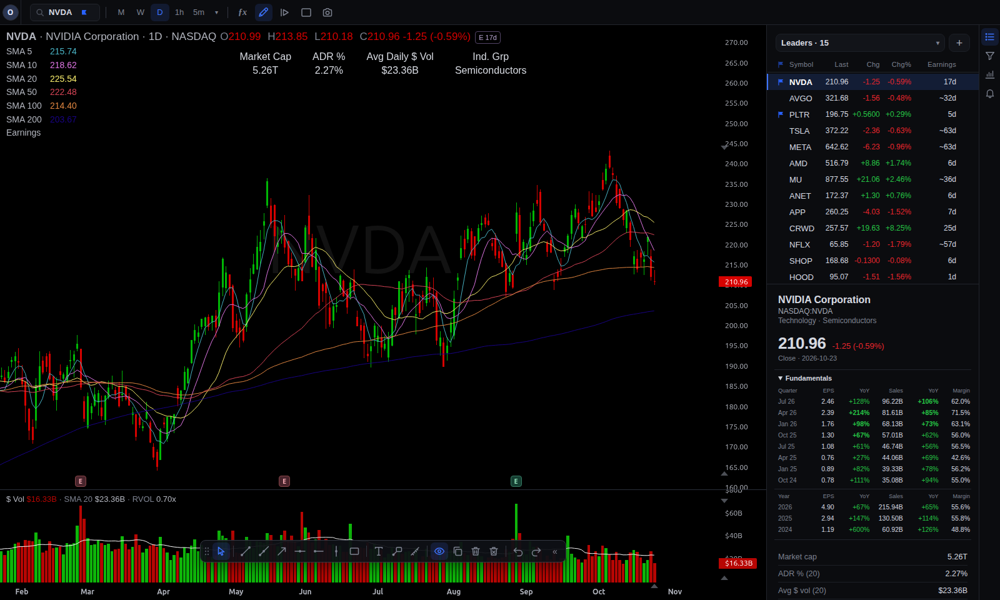
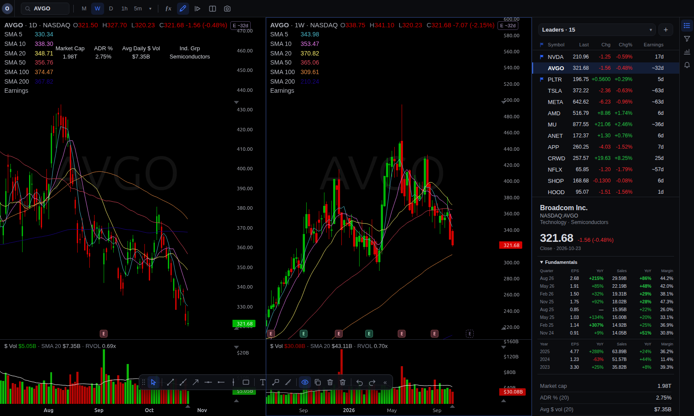
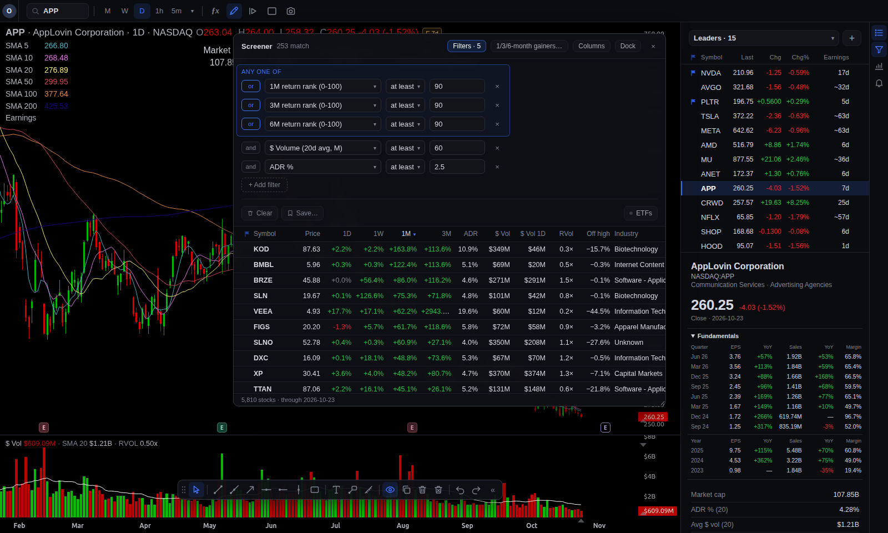
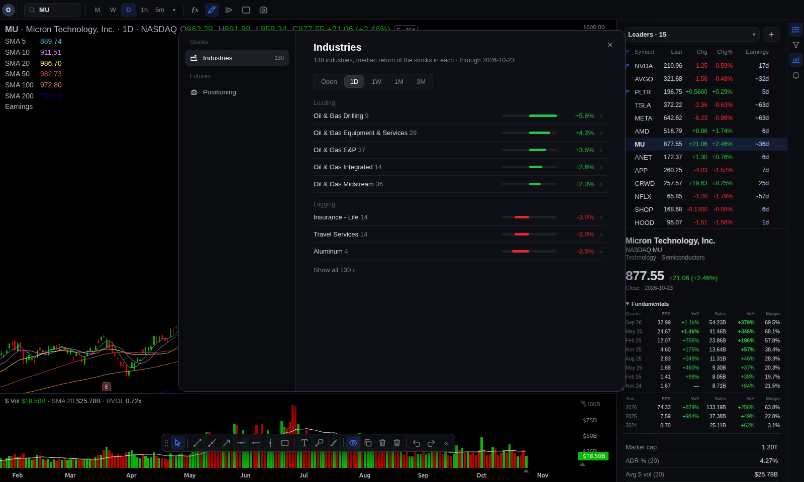
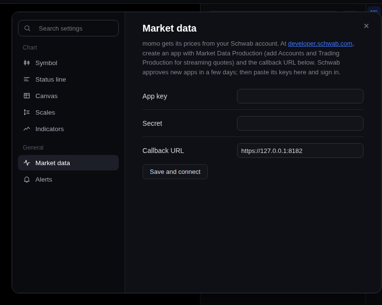

Lists that keep up
Several lists with live prices, change, ADR, earnings countdowns and growth columns you can sort, resize and reorder. A built-in Flagged list.
momo charts is a stock charting and screening app for swing traders that runs on your own computer. Watchlists, drawings, indicators, a screener for every US stock and price alerts, with live prices and 20 years of daily history from your own Schwab account.
Apache 2.0 · Python + plain JavaScript · no subscription, no account with us

If you chart in TradingView or TC2000, the keys will feel familiar. Below is the same chart library momo uses, on made-up data. Click it, then try D W M or type a ticker.
Built for momentum: ADR %, dollar volume, relative volume, distance from highs, days to earnings and quarterly growth sit next to every chart and in every list.



Several lists with live prices, change, ADR, earnings countdowns and growth columns you can sort, resize and reorder. A built-in Flagged list.
Set one from the chart and drag its line to move it. Checked against live quotes, so they sound in every open tab, even when the symbol isn't on screen.
Trend lines, rays, horizontals, rectangles, arrows, text and a measure tool, back where you left them next time.
Live prices update today's daily bar, a pre- and post-market price tag and a ghost candle.
Eight quarters and three years of EPS and sales with year-over-year growth, from SEC EDGAR, under the chart.
FastAPI on the server, plain ES modules in the browser. Read it, change it, add another data provider as a Python module.
There is no momo server. The app on your computer talks to Schwab for prices and to free public sources for everything else, and keeps it all in a folder you own.
bars.db: about 20 years a symbol, split-adjusted. The first full fill takes
about an hour; any chart you open fills at once. After each close momo adds the day's bar
and catches splits. Expect 1 to 3 GB.
momo.db: your watchlists, drawings, chart settings, saved screens and
alerts. Back it up like any file.
live.toml: your Schwab app keys and sign-in, readable only by your user
account. They never leave your machine.
It can be, if you chart US stocks. Here is where it fits and where it doesn't.
| momo charts | A hosted charting service | |
|---|---|---|
| Price | Free, open source | Monthly plans for real-time data and more indicators |
| Where it runs | Your computer, in your browser | Their cloud |
| Your data | A folder on your disk | Their servers |
| Market data | Your own Schwab account | Bundled, often by exchange |
| Screener | Every US stock, swing-trading fields, live mode | Varies by plan |
| Markets | US stocks and ETFs only | Global, crypto, forex |
| Scripting, social | None | Yes |
All you install is uv; it fetches the right Python on its own. The Schwab app takes a few days to be approved, so start that first.
$curl -LsSf https://astral.sh/uv/install.sh | shInstalls uv. Skip if you have it.$git clone https://github.com/alx-kap/momo-charts.git && cd momo-charts$uv run momo serveInstalls dependencies on first run, then starts the server.>powershell -ExecutionPolicy ByPass -c "irm https://astral.sh/uv/install.ps1 | iex"Installs uv. Skip if you have it.>git clone https://github.com/alx-kap/momo-charts.git; cd momo-charts>uv run momo serveInstalls dependencies on first run, then starts the server.Connect Schwab, once
https://127.0.0.1:8182, order limit 0.
No. momo only reads market data. The Schwab app it uses is created with an order limit of 0.
Today, yes: Schwab supplies the prices and history, and the Trader API's market data
comes with a brokerage account at no extra cost. Other providers can be added: implement
daily() history and sweep() quotes like
live/schwab.py, or fill bars.db yourself.
Anywhere Python 3.12 runs. It's developed on Linux and used from a browser on a Mac. The server listens on your own computer only (127.0.0.1) unless you choose otherwise.
Run uv run momo fundamentals-update (SEC EDGAR and Nasdaq). SEC asks for a
contact address: set user_agent = "momo you@example.com" under
[fundamentals] in config/momo.toml. Futures positioning is
uv run momo cot-update.
No. Charts are drawn with TradingView Lightweight Charts™, used under its Apache 2.0 licence. Schwab data is used through your own developer app.
git clone https://github.com/alx-kap/momo-charts.git && cd momo-charts && uv run momo serve